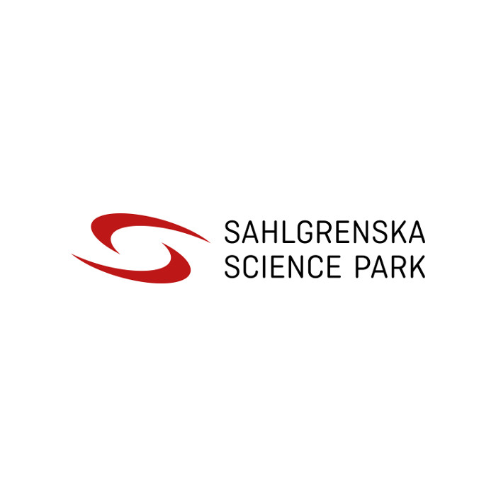
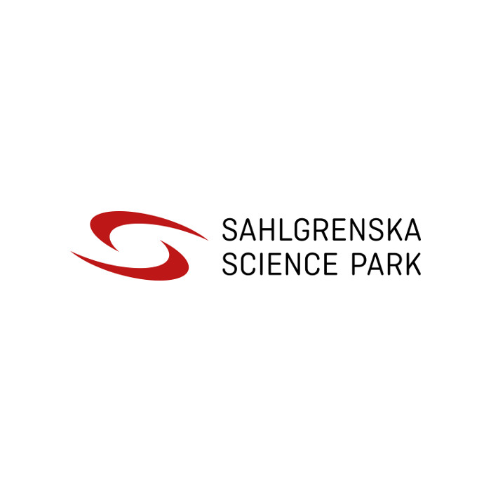

Entrepreneurship & value creation in life science
Tuesday 22/05 - 12:00 - 16:00
Venue: Arvid Carlsson conference room, at Academicum
Signup now! 

GU Ventures and Sahlgrenska Science Park are proud to invite you to this inspiring event!
The aim is to fulfill the curiosity among students and an interest among researches on the topics entrepreneurship and value creation. We welcome researches to explore their possibilities to commercialize their findings and students to get inspired to contribute to building a better world. Don´t miss you chance to hear inspiring talks from Ann-Marie Wennberg, Professor and Director Sahlgrenska University Hospital, Oscar Bolt-Christmas, Senior Partner, McKinsey&Company and Staffan Ternström, former Mölnlycke and Johnson&Johnson!
12:00 – 12:30 Lunch snacks
- Short welcome and introductions by Klementina Österberg, CEO of GU Ventures, and Charlotta Gummeson, CEO of Sahlgrenska Science Park
- Health-care: Ann-Marie Wennberg, Professor and Director Sahlgrenska University Hospital, Västra Götaland Region
- Key Note: Trend Analysis in Life Science, Oscar Bolt-Christmas, Senior Partner, McKinsey&Company
- What commercial innovation support do we have in the region? (AstraZeneca BioVentureHub, Chalmers Ventures, GU Ventures, Sahlgrenska Science Park)
- IP and law: Jesper Dahlberg, lawyer at GU Ventures and Jonas Faijerson Säljö CEO at Synergon
14:00 – 14:30 Break
- Start-up stories: Itedale Namro Redwan, CELLINK, Petter Knagenhjelm, Opatus, samt Linn Hägg, MyOroface
- Industry insights: Staffan Ternström, former Mölnlycke and Johnson&Johnson
15:30 – 16:00 After snacks